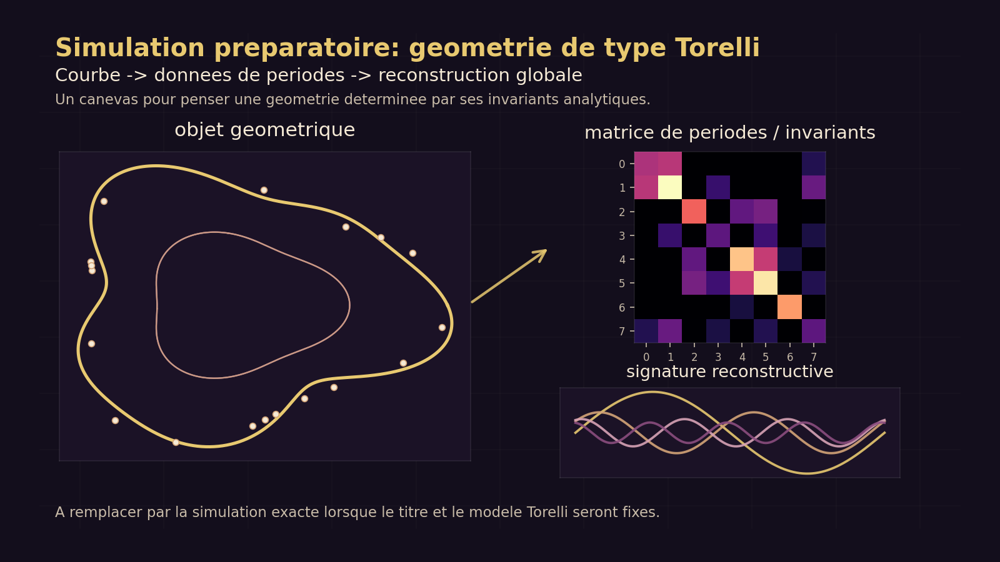
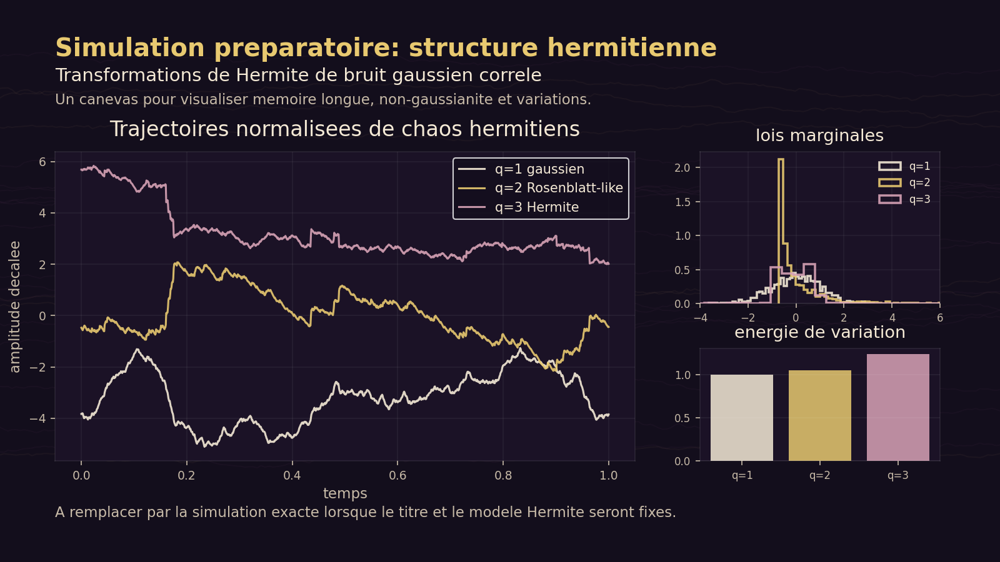

Mes travaux portent sur l'analyse fine des phénomènes aléatoires : processus non gaussiens, chaos de Wiener, équations aux dérivées partielles stochastiques, estimation de paramètres et théorèmes limites quantitatifs.
Domaine
Comprendre ce que l'aléatoire laisse voir
Un même fil traverse ces travaux : extraire une structure mesurable à partir d'objets aléatoires complexes. Les trajectoires, variations, moyennes spatiales et projections de chaos deviennent alors des outils pour identifier des paramètres, décrire des limites et mesurer la part gaussienne cachée dans un système.
01
Processus stochastiques et mémoire longue
Étude de processus fractionnaires ou hermitiens, souvent non gaussiens, où la dépendance à long terme modifie profondément les méthodes classiques d'estimation et de convergence.
02
EDP stochastiques
Analyse d'équations de Burgers, de la chaleur ou des ondes perturbées par du bruit, avec un intérêt particulier pour les variations, les moyennes spatiales et les paramètres de dérive.
03
Chaos de Wiener et limites faibles
Classification des limites, décomposition des composantes primitives et extraction de facteurs gaussiens dans des suites de variables vivant dans des chaos de Wiener.
Travaux en préparation
Deux prochains axes à formaliser
Cette zone prépare l'arrivée des deux prochains articles. Chaque bloc contient déjà sa place pour le titre définitif, l'abstract en français et une simulation associée. Les visuels actuels sont des canevas de travail.

Torelli · brouillon
Titre à préciser
Préparer une géométrie globale à partir d'invariants analytiques : périodes, signatures reconstructives, formes primitives et passage d'un objet local à une reconstruction globale.
Titre : à remplacer par le titre officiel.Abstract : à intégrer dès que le résumé sera stabilisé.Simulation : canevas provisoire autour d'une géométrie de type Torelli.

Hermite · brouillon
Titre à préciser
Préparer le terrain autour des processus hermitiens : mémoire longue, transformations de Hermite, non-gaussianité, variations et estimation de paramètres.
Titre : à remplacer par le titre officiel.Abstract : à intégrer dès que le résumé sera stabilisé.Simulation : canevas provisoire autour de chaos hermitiens.
Publications
Articles scientifiques
Chaque article peut être ouvert pour lire un résumé en français et accéder à la source officielle.
Résumé
L'article caractérise les limites faibles de vecteurs bornés dans un chaos de Wiener fixe lorsque les espaces de Hilbert gaussiens peuvent varier. Il décrit une classification par polynômes de Wiener pondérés, construit une extraction positive de type Hilbert-Stein et relie les projections primitives à la part gaussienne indépendante détectable par contractions.
Le travail utilise l'analyse sur les chaos de Wiener pour étudier les variations quadratiques du processus d'Ornstein-Uhlenbeck hermitien, défini comme solution d'une équation de Langevin conduite par un processus d'Hermite. Ces résultats servent ensuite à identifier le paramètre de Hurst du modèle.
L'article analyse la solution de l'équation de Burgers stochastique avec bruit blanc espace-temps additif. La solution est décomposée en une partie liée à l'équation de la chaleur stochastique et une partie plus régulière, puis cette structure est exploitée pour estimer le paramètre de dérive à partir de variations en temps et en espace.
À l'aide du calcul de Malliavin, l'article étudie le comportement limite des variations par ondelettes associées à une équation des ondes stochastique. Il propose un estimateur par ondelettes du paramètre de Hurst et établit ses propriétés asymptotiques.
Ce travail établit un théorème central limite quantitatif pour l'équation de la chaleur fractionnaire stochastique avec bruit gaussien multiplicatif. Les moyennes spatiales, correctement renormalisées, convergent vers une limite gaussienne en distance de variation totale, avec une version fonctionnelle du résultat.
L'article étudie les variations quadratiques, en temps et en espace, de la solution de l'équation des ondes stochastique conduite par un bruit blanc espace-temps. Après renormalisation, ces variations satisfont un théorème central limite et permettent de construire des estimateurs pour le paramètre de dérive.
Le texte étudie des propriétés du processus d'Hermite généralisé, un processus auto-similaire non gaussien. Il définit une intégrale de Wiener associée à ce processus, puis l'utilise pour construire et analyser un processus d'Ornstein-Uhlenbeck non gaussien et rugueux.